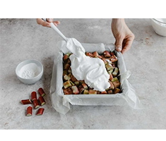

Mąkę przesiewamy do miski wraz z cukrem pudrem i proszkiem do pieczenia.
Dodajemy kawałki zimnego masła oraz sól. Całość siekamy nożem, aż powstanie
kruszonka. Po chwili dodajemy żółtka oraz śmietanę i zagniatamy na gładkie
ciasto. Formujemy kulę, zawijamy w folię spożywczą i chłodzimy w lodówce
ok. 30 min.
Piekarnik nagrzewamy do 180 C. Formę smarujemy masłem i wykładamy papierem
do pieczenia. Przekładamy ciasto i dokładnie wykładamy nim spód. Pieczemy
do zarumienienia ok. 20 min. Pozostawiamy do wystudzenia.
Rabarbar kroimy na 1 cm kawałki. Przekładamy do
miski. Dodajemy mąkę ziemniaczaną, cukier oraz
konfiturę. Dokładnie mieszamy.
Białka ubijamy na sztywną pianę. Po jednej łyżce dodajemy cukier i ubijamy tak,
aby masa była sztywna i lśniąca. Pod koniec ubijania dodajemy mąkę ziemniaczaną
i dalej ubijamy jeszcze ok. 2-3 min.
Rabarbar przekładamy na podpieczony spód.
Piekarnik nagrzewamy do 160 C. Ubite białka przekładamy na ciasto. Wkładamy do
piekarnika na 20 min. Po tym czasie zmniejszamy moc piekarnika do 140 C i
pieczemy kolejne 40 min. Studzimy w piekarniku przy uchylonych drzwiczkach.
